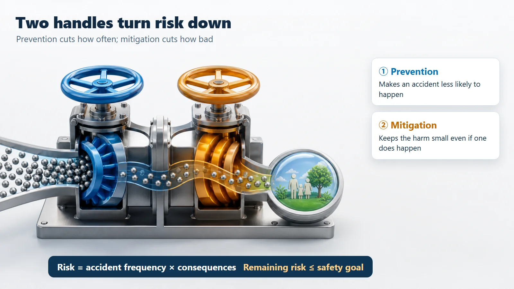
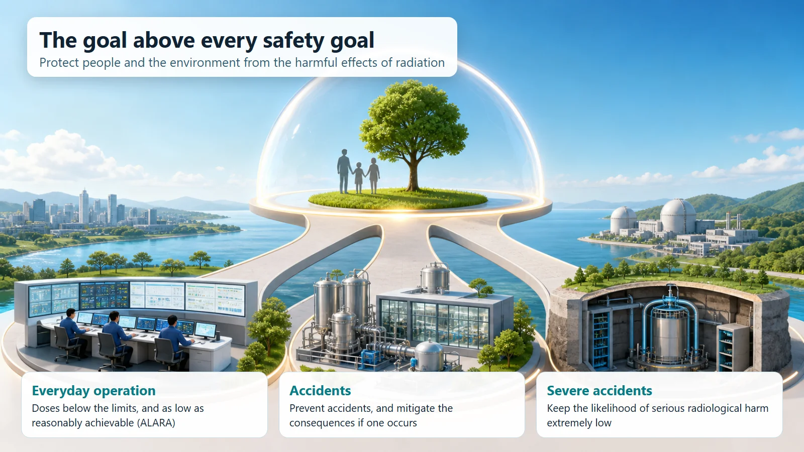

Safety Principles & Accident Analysis · 201
Nuclear Safety Never Promises "Zero Accidents" — What the Nuclear Safety Objective Really Aims For
No technology is risk-free. Nuclear safety aims to protect people and the environment by pressing down both how often accidents happen and how much harm they could do.
The fundamental objective of nuclear safety is not "zero accidents" but protecting people and the environment from the harmful effects of ionizing radiation. Because no technology is risk-free, safety means keeping risk managed and low enough, by lowering both how often accidents happen (prevention) and how much harm they do (mitigation). [1]
Ask people what the goal of nuclear safety is, and many will say "making sure an accident never happens," in other words, driving the probability of an accident down to zero. Yet safety engineering does not promise to make risk zero. If anything, it is wary of anyone who makes that promise. So what does it promise instead?
No technology on Earth is "zero risk"
Cars, airplanes, even the medical equipment in a hospital: none of them carries a risk of exactly zero. Even walking up and down the stairs every day comes with some chance of a fall. And still we use all of these "safely." In that sentence, "safe" doesn't mean there is no risk at all. It means the risk is well managed and kept low enough. So the real question when setting a safety goal is not "how do we make risk zero?" but "how far down can we hold risk, and how?"
Nuclear safety starts from exactly the same place. The fundamental safety objective set out by the International Atomic Energy Agency (IAEA) is remarkably short: "to protect people and the environment from harmful effects of ionizing radiation." Not "zero accidents," but protecting people and the environment from being harmed by radiation. [1]
Two handles that make a car safe
The people who design safe cars don't aim for "zero crashes" either. They go after two things at once. One is making crashes less likely: good brakes, lane-keeping assistance, clear traffic lights. The other is making sure that if a crash does happen, nobody gets badly hurt: seat belts, airbags, guardrails along the road.
Nuclear safety handles risk in exactly the same way. Risk can be thought of roughly as "how often an accident happens (frequency)" multiplied by "how much harm it does when it happens (consequences)," and the safety objective presses down on each factor. Lowering the frequency of accidents is called prevention; lowering their consequences is called mitigation. If the brakes are prevention, the seat belt is mitigation.
The multiplication matters. Doing well on just one factor reduces risk somewhat, but pressing both down together is what makes risk truly small. That is why the safety objective never leans on prevention or mitigation alone; it always asks for both.

The objective comes in layers
The big goal of protecting people and the environment is broken down into more specific goals. Put in everyday terms, there are three layers. [2]
| Layer | What the objective asks for |
|---|---|
| Everyday operation (normal and abnormal) | Radiation doses below the set limits, and as low as reasonably achievable (ALARA) |
| Accidents | Prevent accidents, and mitigate the consequences if one occurs |
| Severe accidents | Keep the likelihood of serious radiological harm extremely low |
In everyday operation, whether the plant is running normally or has a minor hiccup, the dose people receive is kept below the limits and as much lower as is reasonable. Specialists call this attitude ALARA, "as low as reasonably achievable": meeting the limit isn't the finish line. It's like a driver who doesn't just stay under the speed limit but drives with an extra margin when conditions allow.
For accidents, both handles are used: make accidents rare in the first place, and if one still happens, keep the harm small. For very severe accidents, the aim is to keep the very likelihood of such an event at an extremely low level.

The goal and the "how" are different things
A nuclear power plant has layer upon layer of safety equipment: systems that shut the reactor down in an instant, cooling systems that remove heat, thick barriers that keep radioactive material inside, and a whole way of thinking about stacking these in several layers. But these are not the goal; they are the means of achieving it. If protecting people and the environment is the destination, all that equipment is the road that leads there.
Common points of confusion
Safety is not "zero risk." It means the risk is managed and low enough, not that the risk has disappeared. That's also why declaring nuclear power "absolutely safe," or "absolutely dangerous," is not the language of safety engineering.
The goal is not to stop the plant. The goal is to protect people and the environment while the plant is running.
Don't mix up the goal and the tools. Defense in depth, safety systems and the like are not the goal; they are tools for reaching it.
Today's takeaways
- The fundamental objective of nuclear safety is not "zero accidents" but protecting people and the environment from radiation harm.
- "Safe" doesn't mean there is no risk; it means the risk is managed and low enough.
- Risk can be seen as frequency × consequences, and the objective keeps it low by using prevention and mitigation together, like a car's brakes and seat belts.
- The objective comes in layers: everyday doses below the limits and ALARA; accidents prevented and mitigated; the likelihood of a severe accident kept extremely low.
- Defense in depth and safety systems are not the goal but the way to reach it.
Why nuclear plants are designed with so many layers, and why they are operated so carefully: this objective sits at the starting point of all of it.